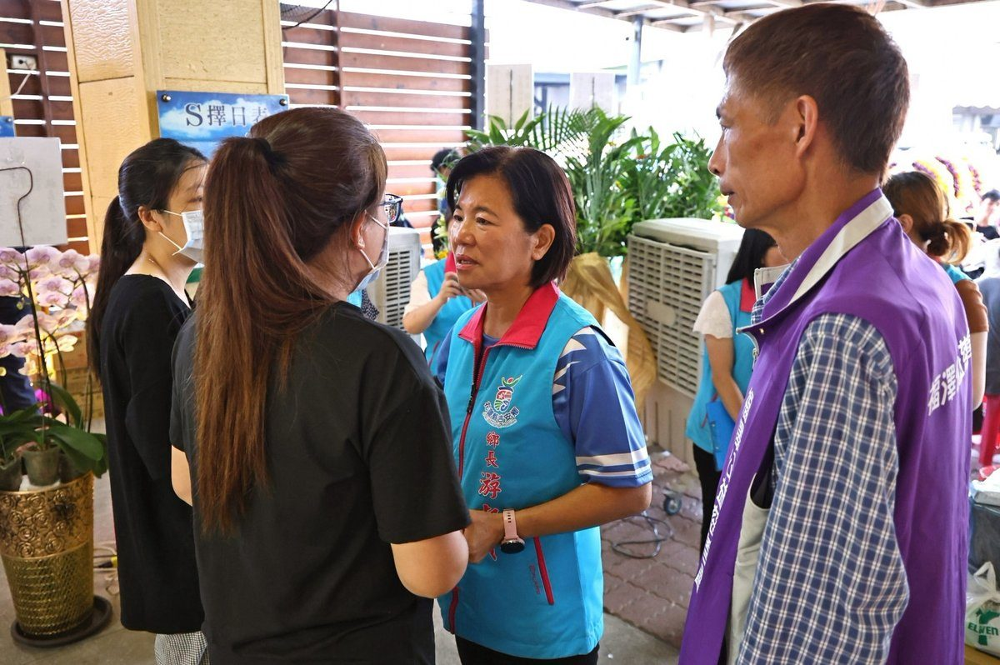
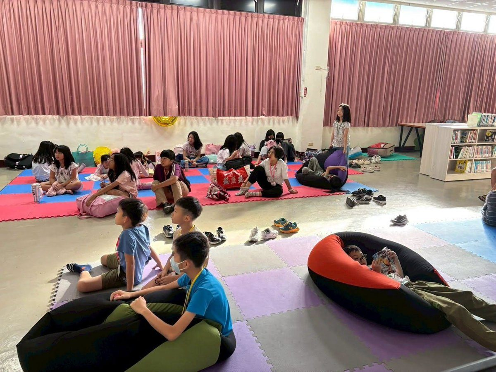
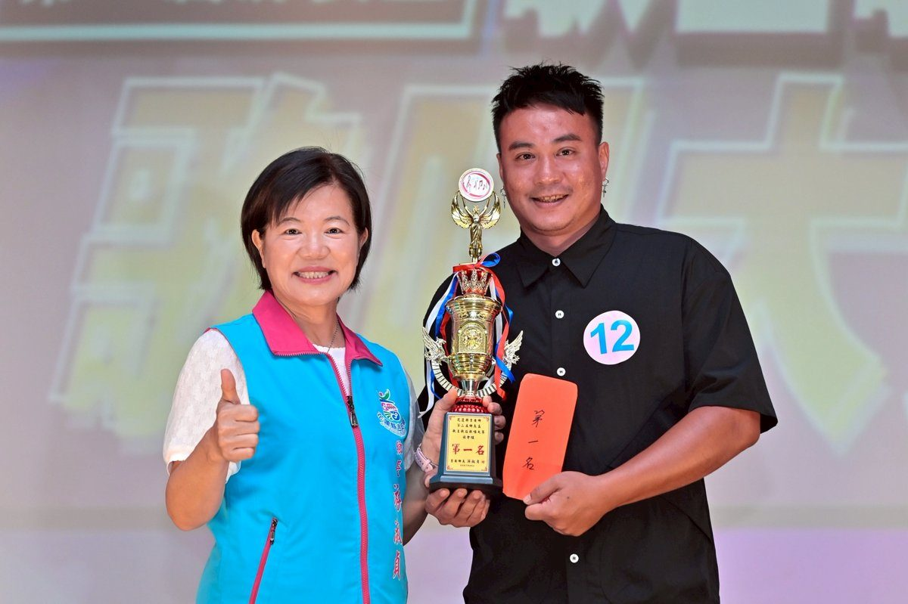
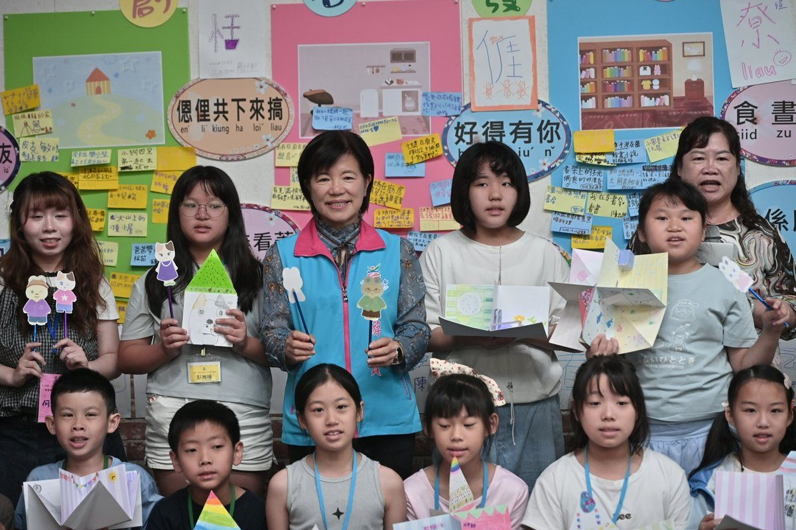
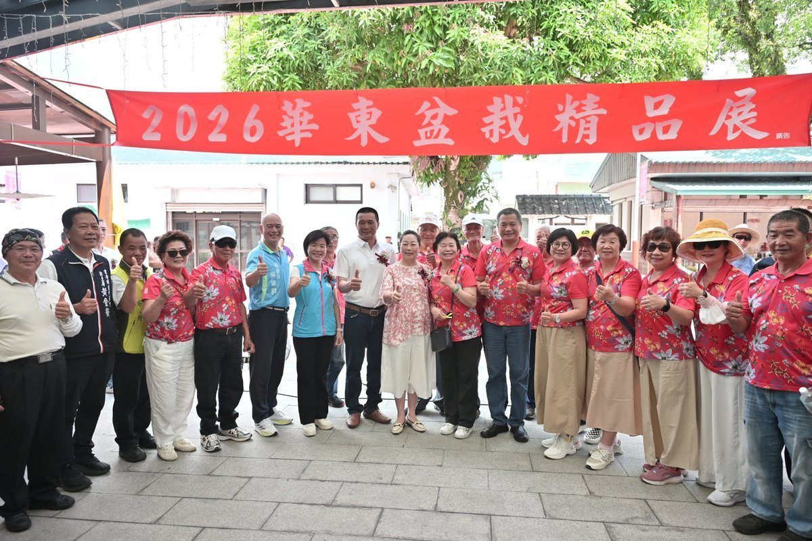
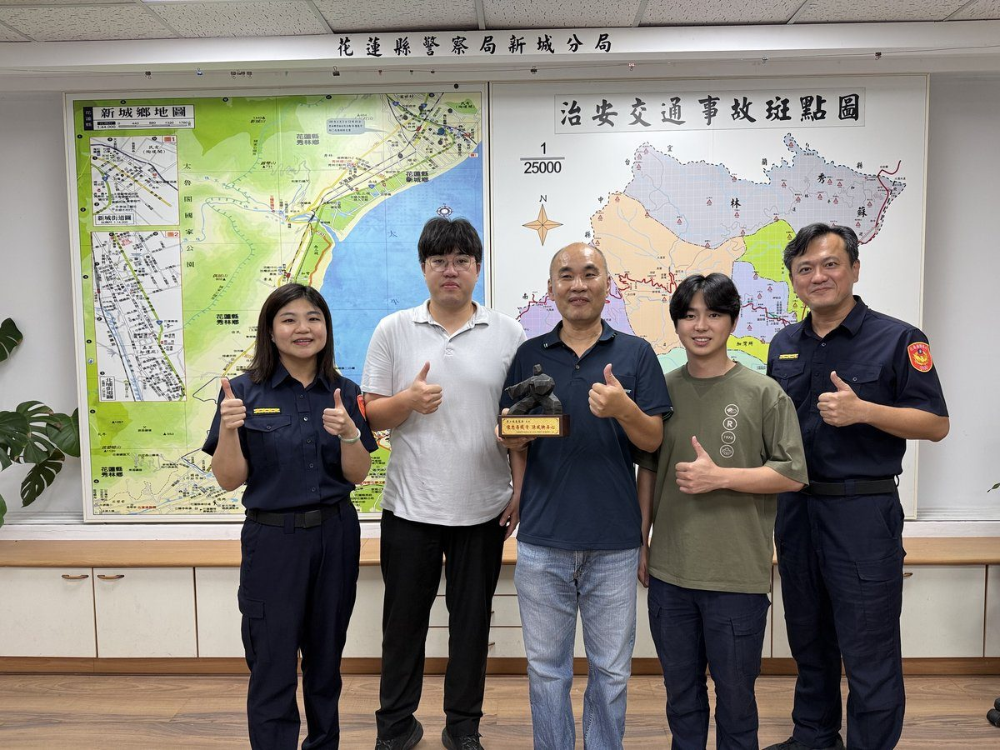
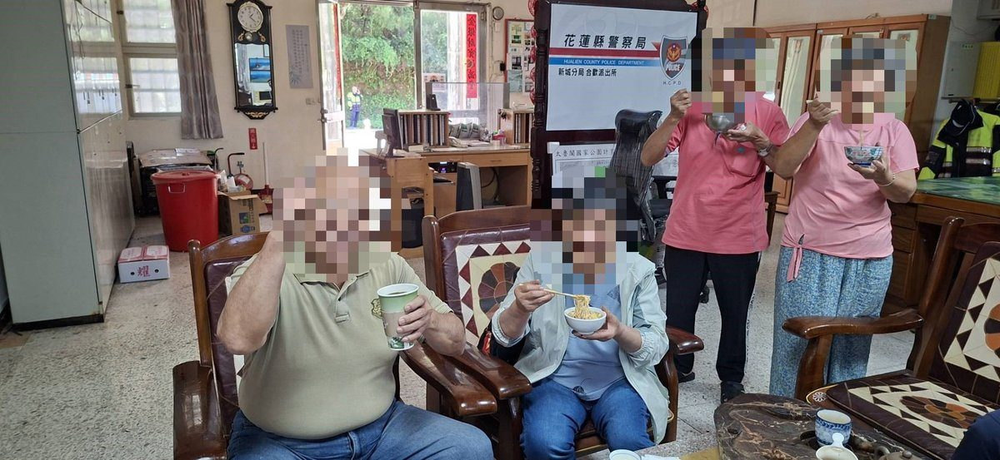
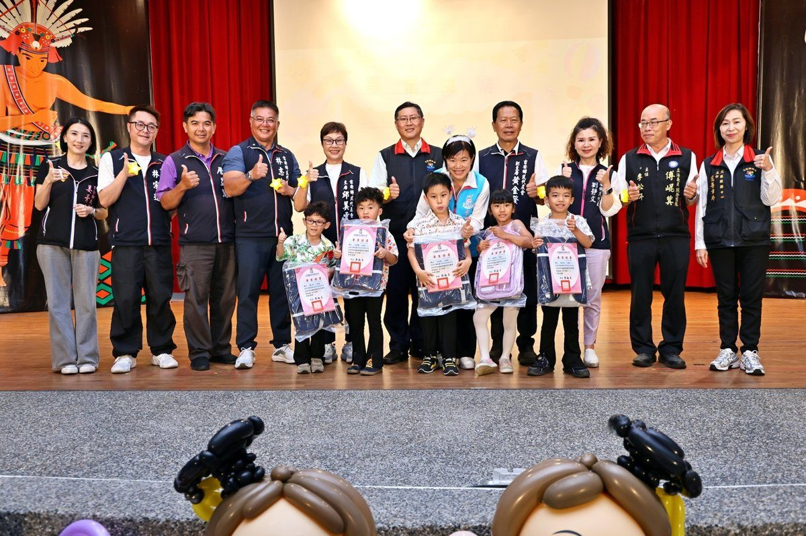

吉安鄉長送暖：協處向女士後事，社福網絡保障弱勢家庭
可樂電子報小編/編輯 吉安鄉長期關懷的71歲向女士不幸辭世，鄉長游淑貞聞訊後深感不捨， […]…
閱讀全文 →
可樂電子報小編/編輯 吉安鄉長期關懷的71歲向女士不幸辭世，鄉長游淑貞聞訊後深感不捨， […]…
閱讀全文 →可樂電子報小編/編輯 吉安鄉公所積極推動多元學習與友善共融環境，日前與花蓮縣自閉症協會 […]…
閱讀全文 →可樂電子報小編/編輯 吉安鄉公所積極推動母語紮根與客家文化傳承，配合客家委員會「115年花蓮縣客語深耕服務計畫 […]…
閱讀全文 →
可樂電子報小編/編輯 為翻轉民眾對圖書館的固有印象，吉安鄉公所於吉安鄉立圖書館舉辦「吉 […]…
閱讀全文 →
為推廣全民正當休閒活動並發掘地方歌唱人才，吉安鄉公所攜手花蓮縣創意歌舞協會，日前於吉安 […]…
閱讀全文 →可樂電子報小編/編輯 吉安鄉公所長期深耕社區發展，在鄉長游淑貞帶領下，任內累計榮獲花蓮縣社區評鑑6次優等、1次 […]…
閱讀全文 →可樂電子報小編/編輯 日前新城警分局北埔派出所於下午1時許接獲民眾報案，表示家中患有失智症的父親於當日上午10 […]…
閱讀全文 →
可樂電子報小編/編輯 為持續深耕客語扎根教育，打造寓教於樂的學習環境，吉安鄉公所在吉安創客棧舉辦為期3天的「1 […]…
閱讀全文 →
可樂電子報小編/編輯 為推廣綠色生活美學，由吉安鄉公所指導，花蓮縣民宿協會承辦的「綠意上板－鹿角蕨手作植栽體驗 […]…
閱讀全文 →
可樂電子報小編/編輯 吉安好客藝術村10號館今（18）日化身為綠意盎然的藝術殿堂，由花蓮縣華東盆栽藝術協會主辦 […]…
閱讀全文 →可樂電子報小編/編輯 地震警報響起的那一刻，吉安鄉公所應變中心燈火通明。今（17）日， […]…
閱讀全文 →
可樂電子報小編/編輯 花蓮縣警察局新城分局兩位資深警務人員，小隊長梁懷謙與合歡派出所副 […]…
閱讀全文 →
可樂電子報小編/編輯 為強化警民合作，並提升企業員工反詐意識，花蓮縣警察局新城分局於民 […]…
閱讀全文 →可樂電子報小編/編輯 花蓮縣警察局新城分局秀林分駐所員警日前執行「社區警政再出發」勤務 […]…
閱讀全文 →可樂電子報小編/編輯 115年7月10日23時許，新城警分局北埔派出所接獲熱心民眾報案 […]…
閱讀全文 →
可樂電子報小編/編輯 颱風來襲前夕，山區氣候不穩、路面濕滑，往往也是車輛故障與受困意外 […]…
閱讀全文 →可樂電子報小編/編輯 受巴威颱風影響，昨日晚間18時許，新城警分局和平派出所所長周光譽 […]…
閱讀全文 →
可樂電子報小編/編輯 吉安鄉立幼兒園15日在吉安鄉阿美文化館舉辦第31屆畢業典禮。畢業 […]…
閱讀全文 →
可樂電子報小編/編輯 吉安鄉表現亮眼，不僅榮獲團體組及個人組特優，更有9位志工獲頒優等獎，展現社區長年深耕環境 […]…
閱讀全文 →
可樂電子報小編/編輯 吉安鄉公所長期深耕社區發展工作，積極推動終身學習、食農教育及地方 […]…
閱讀全文 →